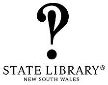

1.825 Wikipedia articles in 96 languages in which images from Category:Images from the State Library of NSW are used, grouped by language
This overview is based on this XML output of the GLAMorous tool d.d. 14-03-2024.
It was generated using the GLAMorousToHTML code.
Also see the documentation of this tool.
This data is also available as an Excel file. More structured data formats (csv, json) will be added in the future.
Available languages
English (812)
French (88)
German (82)
Spanish (62)
Egyptian Arabic (56)
Arabic (50)
Russian (46)
Japanese (33)
Italian (30)
Chinese (29)
Hebrew (28)
Polish (26)
Portuguese (26)
Dutch (25)
Persian (22)
Catalan (21)
Malay (21)
Swedish (21)
Ukrainian (21)
Czech (20)
Nynorsk (13)
Turkish (13)
Vietnamese (13)
Eastern Armenian (12)
Slovene (11)
Esperanto (10)
Finnish (10)
Indonesian (10)
Afrikaans (9)
Bangla (9)
Romanian (9)
Danish (8)
Hungarian (8)
Irish (8)
Lithuanian (8)
Korean (7)
Serbian (7)
Nynorsk (6)
Urdu (6)
Bulgarian (5)
Latin (5)
Standard Estonian (5)
Welsh (5)
Asturian (4)
Azerbaijani (4)
Breton (4)
Serbo-Croatian (4)
Telugu (4)
Uzbek (4)
Albanian (3)
Basque (3)
Cantonese (3)
Galician (3)
Georgian (3)
Greek (3)
Hindi (3)
Luxembourgish (3)
Macedonian (3)
Malayalam (3)
Punjabi (3)
South Azerbaijani (3)
Belarusian (2)
Bhojpuri (2)
Cebuano (2)
Central Bikol (2)
Hausa (2)
Ido (2)
Kannada (2)
Kapampangan (2)
Malagasy (2)
Marathi (2)
Punjabi (2)
Slovak (2)
Thai (2)
Tongan (2)
Bosnian (1)
Cornish (1)
Croatian (1)
Gagauz (1)
Igbo (1)
Ilocano (1)
Interlingua (1)
Lingala (1)
Maltese (1)
Manx (1)
Mongolian (1)
Occitan (1)
Romansh (1)
Santali (1)
Sindhi (1)
Sinhala (1)
Sorani (1)
Tamil (1)
West Flemish (1)
West Frisian (1)
Zazaki (1)
English (812)
145_George_Street,_The_Rocks |
147_George_Street,_The_Rocks |
149-151_George_Street,_The_Rocks |
1770_Speaker_of_the_British_House_of_Commons_election |
1789_Sydney_smallpox_outbreak |
1798 |
1813_crossing_of_the_Blue_Mountains |
1855_Victorian_High_Treason_trials |
1899 |
1900s_in_Western_fashion |
1917_Australian_general_strike |
1922_in_Australia |
1932_Summer_Olympics |
1938_in_Australia |
1940_in_Australia |
1946_New_South_Wales_Grand_Prix |
1953_British_Mount_Everest_expedition |
1978_California_Proposition_6 |
1979_Sydney_Ghost_Train_fire |
2007_All_Golds_Tour |
40th_(the_2nd_Somersetshire)_Regiment_of_Foot |
7.5_cm_Gebirgskanone_L/13_C/80 |
7th_(Service)_Battalion,_Gloucestershire_Regiment |
ANZAC_Cove |
ANZ_(bank) |
Abe_Saffron |
Adelina_de_Lara |
Adeline_Genée |
Adrian_Knox |
Aerial_photography |
Aerial_warfare |
Agvan_Dorzhiev |
Akubra |
Albert_Bruntnell |
Albury |
Alcohol_intoxication |
Aleamotuʻa |
Alexander_Armstrong_(Australian_politician) |
Alexander_Berry |
Alexander_Riley_(merchant) |
Alexander_Stuart_(Australian_politician) |
Alexander_Walker_Scott |
Alexander_Zakin |
Alexander_von_Kaulbars |
Alfred_Cheetham |
Alfred_Hodgeman |
Alfred_Vincent |
Alfred_William_Howitt |
Amelia_Earhart |
Amelita_Galli-Curci |
Andrew_Vern-Barnett |
Ann_Hogarth |
Anna_Bishop |
Annie_Besant |
Anthony_Hordern_&_Sons |
Anti-Gold_Licence_Association |
Antoni_Przybylski |
Anzac_Memorial |
Archer_Hoskings |
Archibald_Jacob |
Archibald_Michie |
Architecture_of_Sydney |
Armidale |
Armistice_of_11_November_1918 |
Arthur_Hill_Griffith |
Arthur_Phillip |
Asbestos |
Ashton_Lever |
Asian_and_Pacific_theatre_of_World_War_I |
Astronomy |
Athol_Richardson |
Attack_on_Sydney_Harbour |
Augustus_Morris |
Australasian_Antarctic_Expedition |
Australia_Day_debate |
Australia_at_the_1932_Summer_Olympics |
Australia_at_the_Olympics |
Australian_Aboriginal_cricket_team_in_England_in_1868 |
Australian_Alps |
Australian_Hall |
Australian_Library_and_Information_Association |
Australian_Museum |
Australian_National_Airways |
Australian_National_Airways_(1930) |
Australian_Naval_and_Military_Expeditionary_Force |
Australian_Securities_Exchange |
Australian_Subscription_Library |
Australian_art |
Australian_folklore |
Australian_frontier_wars |
Australian_gold_rushes |
Australian_literature |
Australian_nationalism |
Australian_pub |
Australian_rodeo |
Australian_rules_football_in_popular_culture |
Australind,_Western_Australia |
Autochrome_Lumière |
Ballarat |
Ballarat_Fire_Station |
Ballarat_Reform_League |
Balmain_Rowing_Club |
Bampton_Lectures |
Barcroft_Capel_Boake |
Bare_Island_(New_South_Wales) |
Batavia_(1628_ship) |
Battle_of_the_Eureka_Stockade |
Battle_of_the_Plains_of_Abraham |
Beaumont_and_Fletcher |
Bedding |
Ben_Fuller_(producer) |
Bendigo_Petition |
Bennelong_Point |
Beret |
Bernhardt_Holtermann |
Beryl_Nashar |
Betty_Bryant |
Bidjigal |
Bill_Dunn_(Australian_politician) |
Bill_O'Reilly_(cricketer) |
Billie_Worth |
Billy_Blue |
Billy_Hughes |
Black_War |
Blamire_Young |
Blood_bank |
Bobby_Limb |
Bodyline |
Bonnie_Mealing |
Borobudur |
Botany_Bay |
Bourke,_New_South_Wales |
Bourke_railway_station |
Boxer_Rebellion |
Boy_Charlton |
Bradley_&_Rulofson |
Brickpit_Ring_Walk |
British_Army_in_Australia |
Bruce_Dellit |
Buick |
Bulli_Pass |
Bullocky_(cricketer) |
Bungarribee_Homestead_Site |
Burcham_Clamp |
Burke,_Wills,_King_and_Yandruwandha_National_Heritage_Place |
Bushranger |
Butler_Cole_Aspinall |
CS_Faraday_(1923) |
Cadillac |
Campbelltown,_New_South_Wales |
Cape_Turnagain |
Captain_Thunderbolt |
Captive_elephants |
Cara_David |
Carlyle_Greenwell |
Caroline_Chisholm |
Cecil_Healy |
Charles_Bannerman |
Charles_Campbell_(New_South_Wales_politician) |
Charles_Doudiet |
Charles_Francis_Laseron |
Charles_Harpur |
Charles_Hotham |
Charles_La_Trobe |
Charles_Pasley_(engineer) |
Charles_Ulm |
Chartism |
Chartism_and_the_Eureka_Rebellion |
Chemical_weapons_in_World_War_I |
Clare_College,_Cambridge |
Clare_Dennis |
Clark_Island,_New_South_Wales |
Clarke_brothers |
Clive_Amadio |
Clive_Churchill |
Cockatoo_Island |
Coffs_Harbour |
Colonial_Ship_King_George |
Colonial_forces_of_Australia |
Commonwealth_Bay |
Conrad_Martens |
Convicts_in_Australia |
Cooks_River |
Corroboree_at_Newcastle |
Cosmographia_(Sebastian_Münster) |
Costermonger |
Country_Women's_Association |
Crime_fiction |
Culture_of_Australia |
Customs_House,_Sydney |
Cuyler_Hastings |
Cyril_Clowes |
Daisy_Bates_(author) |
Daniel_Gardner |
Darlinghurst |
David_Gaunson |
David_Scott_Mitchell |
David_Storey_(politician) |
Davis_Cup |
Dawn_Lake |
Day_of_Mourning_(Australia) |
De_Havilland_Express |
Decima_Norman |
Department_stores_by_country |
Devonshire_Street_Cemetery |
Dexter_Daniels_(Aboriginal_activist) |
Dick-a-Dick |
Division_of_Macarthur |
Division_of_Wills |
Dodge_T-,_V-,_W-Series |
Dogs_of_the_Australasian_Antarctic_Expedition |
Donaldson_ministry |
Doris_Fitton |
Douglas_Annand |
Dulcie_Deamer |
Dunedin |
Eddystone_Lighthouse |
Edgar_Bainton |
Edmund_Hillary |
Eduard_von_Knorr |
Edward_Butler_(Australian_politician) |
Edward_Flood |
Edward_Hargraves |
Edward_Riou |
Edward_Thonen |
Eight-Nation_Alliance |
Eileen_Kramer |
Elizabeth_Macarthur |
Elizabeth_Street,_Sydney |
Ella_Shields |
Ellora_Caves |
Emma_Timbery |
Empire_(newspaper) |
Endurance_(1912_ship) |
Enele_Maʻafu |
English,_Scottish_&_Australian_Bank |
Enmore_Theatre |
Epping,_New_South_Wales |
Ernest_Farrar_(politician) |
Eruera_Maihi_Patuone |
Eryldene,_Gordon |
Ethel_Turner |
Eureka,_Victoria |
Eureka_Flag |
Eureka_Jack_Mystery |
Eureka_Rebellion |
Eureka_Rebellion_in_popular_culture |
Eureka_Stockade_(fortification) |
Eureka_Stockade_Memorial_Park |
Eureka_Stockade_Monument |
Eva_Mylott |
Expressionist_dance |
Fan_mail |
Fanny_Durack |
Far_Eastern_Party |
Fashion |
Fay_Compton |
Felix_the_Cat |
Fire_and_Rescue_New_South_Wales |
Fire_engine |
First_Government_House,_Sydney |
First_voyage_of_James_Cook |
Fitzroy_Dock |
Fitzroy_Iron_Works |
Flip_(acrobatic) |
Florence_Austral |
Florence_James-Wallace |
Florence_Mary_Taylor |
Forest_Creek_Monster_Meeting |
Fort_Street_High_School |
Frances_Bult |
Francis_Birtles |
Francis_Greenway |
Francis_Merewether_(Australian_politician) |
Francis_Wheatley_(painter) |
Frank_Hawks |
Frans_Balthazar_Solvyns |
Frederick_Frith |
Frederick_Garling_Jr. |
Frederick_Matthew_Darley |
Frederick_Robson |
Frederick_Spencer_Burnell |
Frederick_Vern |
Freedom_Ride_(Australia) |
Fremantle_Journal_and_General_Advertiser |
French_cruiser_Montcalm_(1900) |
French_ironclad_Atalante |
Gallipoli_campaign |
Garden_Island_(New_South_Wales) |
Garrison_Church,_Sydney |
General_Aircraft_Monospar |
General_Post_Office,_Sydney |
General_Register_Office |
Geoffrey_Forrest_Hughes |
George_Augustus_Robinson |
George_Barron_Goodman |
George_Bennett_(naturalist) |
George_Cox_(New_South_Wales_politician) |
George_Evans_(explorer) |
George_French_Angas |
George_Lewis_Becke |
George_Lord |
George_Macleay |
George_Masters |
George_Rignold |
George_Rowe_(printmaker) |
George_Silk |
George_Washington_Lambert |
Gerard_George_Fitzgerald |
Gerard_Krefft |
Gertrud_Bodenwieser |
Ginger_Mick |
Gladys_Moncrieff |
Glebe_Island |
Glebe_Island_Bridge |
Goat_Island_(Port_Jackson) |
Gold_prospecting |
Governor_Davey's_Proclamation |
Governor_of_Tasmania |
Grace_Emily_Munro |
Great_Synagogue_(Sydney) |
Great_Yarmouth |
Greek_Australians |
Greenway_Wing_(Supreme_Court_of_New_South_Wales) |
Gun_laws_of_Australia |
HMAS_Australia_(1911) |
HMAS_Tingira |
HMS_Chatham_(1788) |
HMS_Clio_(1858) |
HMS_Discovery_(1789) |
HMS_Galatea_(1859) |
HMS_Investigator_Anchors |
Hand-colouring_of_photographs |
Harold_Cazneaux |
Harold_Frederick_Neville_Gye |
Harold_Hardwick |
Harry_Hay_(swimmer) |
Harry_Jefferis |
Hazelbrook,_New_South_Wales |
Health_impact_of_asbestos |
Hedley_Verity |
Helen_Twelvetrees |
Henry_Beaufoy_Merlin |
Henry_Bruce_(Royal_Navy_officer,_born_1792) |
Henry_Christopher_Wise_(born_1829) |
Henry_Dresser_Atkinson |
Henry_Ernest_Searle |
Henry_Harper_(bishop) |
Henry_Lawson |
Henry_Morton_Stanley |
Henry_Ross |
Henry_Seekamp |
Herbert_Sutcliffe |
Herbert_Sutcliffe's_cricket_career_(1919–1927) |
Heritage_gardens_in_Australia |
Hessilhead |
Hexham_Bridge,_New_South_Wales |
Hiking |
Historic_bridges_of_New_South_Wales |
History_of_Auckland |
History_of_Australia |
History_of_Australia_(1788–1850) |
History_of_Australia_(1851–1900) |
History_of_Brisbane |
History_of_Chinese_Australians |
History_of_Indigenous_Australians |
History_of_New_South_Wales |
History_of_Qantas |
History_of_Sydney |
History_of_corsets |
History_of_monarchy_in_Australia |
History_of_the_Australian_Broadcasting_Corporation |
History_of_the_Jews_in_Australia |
Hokitika |
Home_Secretary |
Home_front_during_World_War_I |
Huddart_Parker |
Human_rights_in_Australia |
Hunter_River_(New_South_Wales) |
Hunter_Street,_Sydney |
Hyde_Park,_Sydney |
Ilam,_New_Zealand |
Immigration_history_of_Australia |
Imperial_Trans-Antarctic_Expedition |
Indigenous_Australians |
Infante_Jaime,_Duke_of_Madrid |
International_airport |
Ion_Idriess |
Irene_Vanbrugh |
Isaac_Isaacs |
Ivanhoe,_New_South_Wales |
J._A._Prestwich_Industries |
Jack_Donahue |
Jack_Johnson_(boxer) |
Jacob_Richard_Clarke |
Jagdgeschwader_II |
James_Bonwick |
James_Brunton_Stephens |
James_Chisholm_(politician) |
James_Dempsey_(builder) |
James_Dunlop |
James_Greenwood_(Australian_politician) |
James_Hardy_Vaux |
James_Macarthur_(politician) |
James_Scobie |
James_White_(New_South_Wales_politician) |
Jardwadjali |
Jean_Batten |
Jeffrey_Street |
Jim_Craig_(rugby_league) |
Jimmy_Bancks |
Jitterbug |
John_Basson_Humffray |
John_Blaxland_(explorer) |
John_Campbell_(Australian_politician) |
John_Curtin |
John_Estell |
John_Frazer_(politician) |
John_Hargrave_(judge) |
John_Joseph_(rebel) |
John_K._Shirley |
John_King_(explorer) |
John_King_(police_officer) |
John_Lewin |
John_Manning_(journalist) |
John_Murray_(Australian_explorer) |
John_Oxley |
John_Redmond |
John_Robertson_(premier) |
John_Robertson_Duigan |
John_Saumarez_Dumaresq |
John_Skinner_Prout |
John_Smith_(New_South_Wales_politician,_born_1821) |
John_Watt_(politician) |
John_Watts-Russell |
John_Wellesley_Thomas |
Joseph_Backler |
Joseph_Edmund_Carne |
Joseph_Fowles |
Julius_von_Haast |
Junk_(ship) |
KIIS_106.5 |
Kanangra_(ferry) |
Kangaroo |
Kareela_(ferry) |
Kate_Kelly_(sister_of_Ned_Kelly) |
Katharine_Susannah_Prichard |
Katherine_Airfield |
Ken_G._Hall |
Kings_Cross_Theatre |
Kirrule-type_ferry |
Kodak_Panoram |
Kurraba_and_Kirribilli |
LGBT_rights_in_Australia |
Lambing_Flat_riots |
Lanes_and_alleyways_of_Sydney |
Laura_Francis_(missionary) |
Laurence_Hynes_Halloran |
Lavinia_Veiongo |
Leader_of_the_House_of_Commons |
Leader_of_the_House_of_Lords |
Len_Fox |
Len_Hutton |
Les_Darcy |
Letter_(message) |
Leverian_collection |
Librarian |
Lighthouse |
Lilianfels,_Katoomba |
Lily_Brayton |
List_of_Antarctic_exploration_ships_from_the_Heroic_Age,_1897–1922 |
List_of_Australian_aviation_firsts |
List_of_Brighton_Grammar_School_people |
List_of_British_Army_regiments_that_served_in_Australia_between_1810_and_1870 |
List_of_Edmund_Blacket_buildings |
List_of_Indigenous_Australian_sportspeople |
List_of_Old_Boys_of_St_Aloysius'_College |
List_of_Old_Newingtonians |
List_of_Russian_ballet_dancers |
List_of_Sydney_Harbour_ferries |
List_of_alumni_of_Clare_College,_Cambridge |
List_of_conflicts_in_Australia |
List_of_convicts_transported_to_Australia |
List_of_demolished_buildings_and_structures_in_Melbourne |
List_of_female_librarians |
List_of_female_nominees_for_the_Nobel_Prize |
List_of_glaciers_of_Heard_Island_and_McDonald_Islands |
List_of_historic_homesteads_in_Australia |
List_of_islands_in_the_Pacific_Ocean |
List_of_libraries_in_Australia |
List_of_mayors_of_Balmain |
List_of_mayors_of_Holroyd |
List_of_military_leaders_in_the_Eureka_Rebellion |
List_of_movie_theaters |
List_of_nominees_for_the_Nobel_Prize_in_Literature |
List_of_people_from_the_Borough_of_Woking |
List_of_people_from_the_greater_Ashfield_area |
List_of_people_legally_executed_in_New_South_Wales |
List_of_post-reformation_saints_in_the_United_Kingdom |
List_of_royal_consorts_of_Tonga |
List_of_seaplane_operators |
List_of_shipwrecks_in_January_1943 |
List_of_tallest_buildings_in_Melbourne |
Lockheed_P-38_Lightning |
Louis-Napoléon,_Prince_Imperial |
Louis_Aragon |
Louis_Pasteur |
Louisa_Atkinson |
Louisa_Lawson |
Louisa_Macdonald |
Loyalism_and_the_Eureka_Rebellion |
Luna_Park_Sydney |
Lying_(position) |
Macquarie_Street,_Sydney |
Maggie_Fitzgibbon |
Malvern_Star |
Manly,_New_South_Wales |
Manly_ferry_services |
Margaret_Molesworth |
Margaret_Windeyer |
Margo_Lee |
Marguerite_d'Alvarez |
Marie_Byles |
Marie_Carandini |
Marquis_Cornwallis_(1789_ship) |
Martin_Cash |
Mary_Gilmore |
Mary_Reibey |
Mary_Windeyer |
Matthew_Flinders |
Maurice_Guillaux |
Max_Müller |
May_Gibbs |
Mechanics'_institutes_of_Australia |
Mei_Quong_Tart |
Melbourne_Cricket_Ground |
Melbourne_Observatory |
Menagerie |
Michael_St._Clair |
Miena,_Tasmania |
Miles_Franklin |
Military_history_of_Australia |
Milton_Kent |
Miner's_licence |
Minties |
Miss_Australia |
Mixed_bathing |
Mollie_Dive |
Montague_Scott |
Moore_Park,_New_South_Wales |
Moree_Baths_and_Swimming_Pool |
Mort's_Dock |
Mosman_Bay_ferry_wharf |
Motorcycle |
Motosacoche |
Mount_Taranaki |
Muffin_the_Mule |
Municipality_of_Balmain |
Museum_of_Contemporary_Art_Australia |
My_Brilliant_Career |
Myles_and_Milo_Dunphy |
NAIDOC_Week |
Nancy_Bird_Walton |
Nancy_Jobson |
Narrabeen_(1886_ferry) |
Narrabri_Post_Office |
Nathaniel_Pidgeon |
National_Heritage_List_(Australia) |
Nationalities_at_the_Eureka_Stockade |
Nellie_Melba |
New_South_Wales |
New_South_Wales_D58_class_locomotive |
New_South_Wales_Government_Architect |
New_Zealand_Railways_Department |
New_Zealand_national_rugby_league_team |
Newcastle,_New_South_Wales |
Ngaio_Marsh |
Niels_Nielsen_(politician) |
Ninnis_Glacier |
Norman_Selfe |
North_Richmond,_New_South_Wales |
November_1926 |
Observation_balloon |
Observatory |
Ohinemutu |
Olga_Spessivtseva |
Outline_of_Melbourne |
Overseas_Passenger_Terminal |
Ox-wagon |
P._L._Travers |
P._R._Stephensen |
PS_Brighton |
Paakantyi |
Paget_process |
Palace_Theatre,_Sydney |
Panel_truck |
Papua_New_Guinea |
Parachute |
Parihaka |
Parliament_House,_Sydney |
Paymaster_of_the_Forces |
Peddler |
Percy_Correll |
Percy_Lindsay |
Performing_arts_in_New_Zealand |
Peter_Lalor |
Peter_Scratchley |
Phantom_(ferry) |
Philip_Gidley_King |
Philip_Micklem |
Photography_in_Australia |
Phyllis_Mander-Jones |
Picnic_horse_racing |
Pigeon_racing |
Pin-up_model |
Plaza_Theatre,_Sydney |
Point_Stephens_Light |
Pontiac_(automobile) |
Pontiac_Streamliner |
Port_Arthur,_Tasmania |
Port_Jackson |
Port_Jackson_and_Manly_Steamship_Company |
Port_Kembla_harbour |
Post-war_immigration_to_Australia |
President_of_the_Board_of_Control |
President_of_the_Board_of_Trade |
Prince_Alfred_Bridge |
Puck_(folklore) |
Punch_and_Judy |
Purulia,_Wahroonga |
Qantas |
Queen_Charlotte_Strait |
RSPCA_Australia |
Rabbit |
Rabbits_in_Australia |
Raffaello_Carboni |
Rail_rolling_stock_in_New_South_Wales |
Rail_transport_in_New_South_Wales |
Randwick_Racecourse |
Rayner_Hoff |
Redmond_Barry |
Regent_Street_railway_station |
Republicanism_and_the_Eureka_Rebellion |
Richard_Brooks_(captain) |
Richard_Hill_(priest) |
Richard_Windeyer_(barrister) |
River_Torrens |
Robert_Campbell_(1769–1846) |
Robert_Johnston_(naval_officer) |
Robert_Russell_(architect) |
Robert_Tooth |
Robert_William_Rede |
Roger_Therry |
Roman_Jasinski |
Rose_Bay,_New_South_Wales |
Rose_Bay_Water_Airport |
Rose_Lindsay |
Russell_Barton |
Ruth_Park |
S._T._Gill |
SMS_Bismarck |
SS_Aorangi_(1883) |
SS_Myoko_Maru_(1939) |
SS_South_Steyne |
Sam_Hood |
Samuel_Blackall |
Samuel_Terry_(politician) |
Sandpainting |
Santa_Claus |
Saul_Samuel |
School_bell |
Scooter_(motorcycle) |
Scrimshaw |
Sea_bathing |
Seru_Epenisa_Cakobau |
Shakespeare's_Birthplace |
Short_Empire |
Silver_City_Comet |
Singapore |
Sir_Daniel_Cooper,_1st_Baronet |
Skiing_in_Australia |
Slouch_hat |
Snake_charming |
Snowball_marches |
Sociable |
Solicitor_General_for_New_South_Wales |
Sono_Osato |
Sopwith_1½_Strutter |
Sovereign_(British_coin) |
Spectacle_Island_(Port_Jackson) |
St_Barnabas_Anglican_Church,_Broadway |
St_James'_Church,_Sydney |
St_Philip's_Church,_Sydney |
State_Library_of_New_South_Wales |
Statue_of_James_Cook,_Hyde_Park |
Street_organ |
Suffolk_Regiment |
Sun_hat |
Sunbaker |
Surry_Hills,_New_South_Wales |
Sydney_Cove |
Sydney_Cove_West_Archaeological_Precinct |
Sydney_Cricket_Ground |
Sydney_Ferries |
Sydney_Grammar_School |
Sydney_Harbour_Bridge |
Sydney_Mechanics'_School_of_Arts |
Sydney_Observatory |
Sydney_Technical_College |
Sydney_Ure_Smith |
Sydney_central_business_district |
T_&_G_Mutual_Life_Assurance_Society |
Tank_Stream |
Tatiana_Riabouchinska |
Tattoo |
The_Big_Picture_(painting) |
The_Brothers_Dalziel |
The_Burns-Johnson_Fight |
The_Eureka_Stockade_(1855_novel) |
The_Mystery_of_a_Hansom_Cab |
The_Romance_of_Runnibede |
The_Songs_of_a_Sentimental_Bloke |
The_Vandyke_Album |
The_convex_mirror |
Theatre_Royal,_Sydney |
Thelma_Scott |
Theodora_Cowan |
Thomas_Blamey |
Thomas_Cass_(surveyor) |
Thomas_Davey_(governor) |
Thomas_Hassall_(priest) |
Thomas_Hiscock |
Thomas_Smart_(New_South_Wales_politician) |
Thomas_Steele_(Australian_politician) |
Thomas_Sutcliffe_Mort |
Thomas_Tidswell |
Thomas_Townshend,_1st_Viscount_Sydney |
Thomas_Watling |
Timeline_of_Sydney |
Timeline_of_Sydney_Harbour_ferries |
Timeline_of_labour_issues_and_events |
Timeline_of_the_Eureka_Rebellion |
Tom_Roberts |
Tom_Wills |
Tommy_Burns_(Canadian_boxer) |
Tony_Rafty |
Trams_in_Sydney |
Tristan_Corbière |
Trousers |
Tugboat |
USS_Valley_Forge_(CV-45) |
Valentin_Zeglovsky |
Vancouver_Expedition |
Vaucluse,_New_South_Wales |
Victorian_Honour_Roll_of_Women |
Victorian_gold_rush |
Vija_Vētra |
Voisin_(aircraft) |
Voyage_of_the_James_Caird |
Walter_Bunning |
Walter_Jennings_(industrialist) |
Walter_Renny |
Wassily_de_Basil |
Wedding_of_Nora_Robinson_and_Alexander_Kirkman_Finlay |
Wellington_Harbour |
Western_Base_party |
Whaling |
Whaling_in_Australia |
White_Australia_policy |
White_flag |
William_Barry_Lord |
William_Bramwell_Withers |
William_Branwhite_Clarke |
William_Broughton_(bishop) |
William_Carr_Smith |
William_Charles_Windeyer |
William_Dampier |
William_Denison |
William_Dixson |
William_Dumaresq |
William_Dymock |
William_Gullick |
William_Hardy_Wilson |
William_Herbert_Ifould |
William_John_Macleay |
William_John_Wills |
William_Lane |
William_Lithgow_(auditor-general) |
William_Mayne_(Australian_politician) |
William_Paterson_(explorer) |
William_Piddington |
William_Sharp_Macleay |
William_Stawell |
William_Wentworth |
William_Westbrooke_Burton |
William_Wilkins_(educator) |
William_Woolls |
William_Wright_(Australian_politician) |
William_à_Beckett |
Windeyer |
Winifred_Waddell |
Wirth's_Circus |
Wisemans_Ferry |
Women's_Auxiliary_Air_Force |
Women's_National_Emergency_Legion |
Women_in_Aviation_International_Pioneer_Hall_of_Fame |
Wonderland_City |
Woodie_(car_body_style) |
Wyangala_Dam |
Xavier_Mertz |
Yorkshire_captaincy_affair_of_1927 |
Zane_Grey
French (88)
1851 |
1854 |
Affaire_de_la_direction_du_Yorkshire_de_1927 |
Alfred_Hodgeman |
Alfred_William_Howitt |
Alliance_des_huit_nations |
Alma_(cuirassé) |
Armide_(1867) |
Atalante_(1868) |
Australasie_aux_Jeux_olympiques_de_1912 |
Australian_National_Airways_(1930) |
Australie_aux_Jeux_olympiques_d'été_de_1932 |
Australie_aux_Jeux_olympiques_de_1920 |
Baie_du_Commonwealth |
Bataille_des_Dardanelles |
Cecil_Healy |
Charles_Ulm |
Chronologie_des_faits_économiques_et_sociaux_dans_les_années_1870 |
Classe_Alma |
Colorisation_photographique |
Conférences_de_Bampton |
Coupe_Davis_1952 |
Cricket |
Cyril_Clowes |
Dans_l'ombre_de_Mary |
Drapeau_blanc |
Dunc_Gray |
Dupleix_(corvette) |
Dupleix_(paquebot_1862) |
Edgar_Bainton |
Edmund_Hillary |
Eileen_Kramer |
Eureka_(Victoria) |
Eva_Mylott |
Expédition_Endurance |
Expédition_antarctique_australasienne |
Florence_Mary_Taylor |
Francis_Greenway |
Frans_Balthazar_Solvyns |
Geoffrey_Forrest_Hughes |
George_William_Evans |
Gertrud_Bodenwieser |
Groupe_de_l'est_lointain |
Guerres_de_la_frontière_en_Australie |
Harold_Hardwick |
Hyde_Park_(Sydney) |
Jack_Donahue |
James_Dunlop |
John_King_(explorateur) |
John_Lewin |
John_Murray_(explorateur) |
Lavinia_Veiongo |
Liste_des_personnalités_du_mouvement_surréaliste |
Louisa_Macdonald |
Love_Story_(film,_1944) |
Margaret_Molesworth |
Margaret_Windeyer |
Marie_Carandini |
Mary_Poppins_(film) |
Miles_Franklin |
Montcalm_(cuirassé) |
Nancy_Bird_Walton |
Observatoire |
Olive_Cotton |
Opération_Pamphlet |
Pamela_L._Travers |
Pointes |
Première_Guerre_mondiale |
Prince_Giolo |
Queen_Victoria_Building |
Reine_Blanche_(cuirassé) |
Roman_Jasinski |
Ruth_Park |
Révolte_du_rhum |
Sybil_Thorndike |
Tatiana_Riabouchinska |
The_Leopard_Lady |
Thomas_Watling |
Thétis_(cuirassé) |
Tom_Wills |
William_Branwhite_Clarke |
William_John_Macleay |
William_Paterson_(botaniste) |
William_Sharp_Macleay |
Windeyer |
Xavier_Mertz |
Éclectisme_égyptien |
Équipe_d'Australie_de_cricket
German (82)
1899 |
1912 |
1996 |
23._April |
9._August |
Aborigines |
Adelina_de_Lara |
Adeline_Genée |
Alexander_Stuart_(Politiker) |
Australasiatische_Antarktisexpedition |
Belgrave_Edward_Sutton_Ninnis |
Berrima_(Schiff,_1913) |
Billy_Blue |
Bonnie_Mealing |
Boxeraufstand |
Cecil_Healy |
Charles_Francis_Laseron |
Chronologie_der_australischen_Kinder-_und_Jugendliteratur |
Commonwealth-Bucht |
David_Jones_(Kaufmann) |
D’Arcy_Niland |
Edgar_Bainton |
Edgar_Gray |
Edward_Thonen |
Endurance |
Eric_Spooner |
Eureka_Stockade |
Francis_Greenway |
Frank_Stillwell |
Gertrud_Bodenwieser |
Geschichte_der_Luftfahrt_in_Australien |
Harold_Cazneaux |
Harold_Hardwick |
Historische_Stätten_und_Denkmäler_in_der_Antarktis |
Hyde_Park_(Sydney) |
International_Lawn_Tennis_Challenge_1939 |
Jack_Johnson_(Boxer) |
James_Dunlop_(Astronom) |
Jardwadjali |
John_Robertson_(Politiker,_1816) |
John_Robertson_Duigan |
Joseph_Lycett |
Katharine_Susannah_Prichard |
Ken_G._Hall |
Lavinia_Veiongo |
Liste_der_Biografien/Mel |
Liste_der_Biografien/Tra |
Liste_der_Entdecker_der_NGC-_und_IC-Objekte |
Liste_der_Panzerschiffe |
Liste_von_Küstenbefestigungen |
Malvern_Star |
May_und_Mina_Moore |
Melbourne_Observatory |
Mertz-Gletscher |
Mia_Mia |
Mollie_Dive |
Nancy_Bird-Walton |
Nebeneinandem |
Nellie_Melba |
Nellie_Stewart |
Ninnis-Gletscher |
Norman_Selfe |
Olive_Cotton |
Olympische_Geschichte_Australiens |
Olympische_Sommerspiele_1932/Leichtathletik_–_5000_m_(Männer) |
Olympische_Sommerspiele_1932/Teilnehmer_(Australien) |
P._L._Travers |
Percy_Lindsay |
Philippinische_Stammestätowierung |
Regierung_Fadden |
Regierung_Menzies_III |
Rollentrainer |
Ruth_Park |
Scharfschütze |
Sträflingskolonie_Australien |
Tatjana_Michailowna_Rjabuschinskaja |
William_Broughton_(Bischof) |
William_Dampier |
William_John_Macleay |
William_Paterson_(Entdecker) |
William_Sharp_Macleay |
William_Westbrooke_Burton
Spanish (62)
Aborigen_australiano |
Alfred_Hodgeman |
Alfred_William_Howitt |
Annie_Besant |
Asunto_de_la_capitanía_de_Yorkshire_de_1927 |
Bahía_de_la_Commonwealth |
Banco_de_sangre |
Batalla_de_Galípoli |
Bicicleta_sociable |
Bourke |
Caza_de_ballenas_en_Australia |
Cecil_Healey |
Circunnavegación_de_Nueva_Zelanda_por_James_Cook_con_el_HMB_Endeavour |
Copa_Davis |
Cuerpo_de_Nueva_Gales_del_Sur |
Cultura_de_Australia |
Danza_expresionista |
Decorador |
Edgar_Bainton |
Expedición_Imperial_Transantártica |
Ficción_criminal |
Florence_Mary_Taylor |
Gary_Shearston |
Glaciar_Ninnis |
Globo_terráqueo |
Grupo_del_Lejano_Este |
Guerra_negra |
Guerras_de_frontera_de_Australia |
Harold_Hardwick |
Helen_Twelvetrees |
Henry_Lawson |
Historia_LGBT_en_Australia |
Historia_militar_de_Australia |
Iglesia_de_Saint_James_(Sídney) |
Iniciativa_Briggs |
Jackie_Searl |
Jacob_Richard_Clarke |
James_Dunlop |
Lavinia_Veiongo |
Levantamiento_de_los_bóxers |
Louisa_Macdonald |
Margaret_Windeyer |
Margo_Lee |
Mary_Elizabeth_Windeyer |
Matthew_Flinders |
Max_Müller |
Nancy_Bird-Walton |
Neoegipcio |
Norman_Selfe |
Pamela_Lyndon_Travers |
Pantalón |
Primer_viaje_de_James_Cook |
Prospección_de_oro |
Queen_Victoria_Building |
Ruth_Park |
Sabrina_(actriz) |
Short_Empire |
Sopwith_1½_Strutter |
Surry_Hills |
Viaje_del_James_Caird |
Voisin |
William_Sharp_Macleay
Egyptian Arabic (56)
آرثر_فيليب |
آرثر_هولرويد |
آنى_بيزنت |
اثيل_ريتشاردسون |
ادجار_باينتون |
اديلينا_د_لارا |
اريك_سپونير |
الفريد_هودجيمان |
الفريد_ويليام_هويت |
الكسندر_ووكر_سكوت |
المسرح_الملكى_(سيدنى) |
اما_تيمبيرى |
اميليتا_جالى_كورسى |
اوليف_كوتن |
باركروفت_كاپيل_بواك |
بانجو_باترسون |
بروس_ديليت |
بى._ال._ترافرز |
بيتى_براينت |
تاتيانا_ريابوشينسكا |
تشارلز_ولم |
توماس_كاس |
ثيلما_سكوت |
جارى_شيارستون |
جورج_بينيت |
جون_روبيرتسون_دويجان |
جيمس_بونويك |
جيوفرى_فورست_هيوز |
دانيل_دينيهى |
دوريس_فيتون |
دونك_جراى |
ديڤيد_جاونسون |
روث_بارك |
روجر_تيرى |
رومان_جاسينسكى |
سابرينا_(ممثله) |
سونو_اوساتو_(ممثله) |
صناعات_جاى_ايه_برسويتش |
فرانسيس_جرينواى |
فلورينس_مارى_تايلور |
كاثرين_سوزانا_بريتشارد |
كين_جى._هال |
لويزا_ماكدونالد |
ماثيو_فليندرز |
مارجو_لى |
ماوريس_جويلاوكس |
هارولد_هاردويك |
هنرى_ارنست_سيرل |
هنرى_مورتون_ستانلى |
وليام_شارب_ماكلى |
ويليام_لين_(مؤلف) |
ويليام_ويلسون_(مهندس) |
پورت_ارثور |
پى._آر._ستيفينسين |
پيتير_سكراتشلى |
چيمس_دانلوپ
Arabic (50)
ألفرد_فنسنت |
ألكسندر_بيري |
أمين_مكتبة |
أوليف_كوتن |
إثيل_ريتشاردسون |
إحياء_العمارة_المصرية |
إريك_سبونر |
البعثة_الإمبراطورية_العابرة_للقارة_القطبية_الجنوبية |
الحرب_السوداء |
الحرب_العالمية_الأولى |
الكحول_في_أستراليا |
النسوية_في_أستراليا |
بالارات |
باميلا_ليندون_ترافرز |
بورصة_أستراليا |
بيتي_براينت |
بيرسي_ليندسي |
تنقيب_عن_الذهب |
توماس_سمارت_(سياسي) |
توماس_كاس |
ثيلما_سكوت |
جورج_بينيت_(عالم) |
جورج_كوكس |
جورج_لورد |
جون_كامبل_(سياسي_أسترالي) |
جون_كينغ_(مستكشف) |
جيم_كرايغ_(لاعب_دوري_الرغبي) |
جيمس_دنلوب |
جيوفري_فورست_هيوز |
دونك_غراي |
ديفيد_ستوري |
روث_بارك |
صموئيل_تيري |
فاني_دوراك_(سباحة) |
فن_أسترالي |
كلكتا |
كنيسة_القديس_جيمس_في_سيدني |
كين_جي._هال |
لين_هوتون |
مارغو_لي |
ماغي_فيتزغيبون |
مسرح_الشرق_الأوسط_في_الحرب_العالمية_الأولى |
معاملة_المثليين_في_أستراليا |
مكتب_السجل_العام |
هارولد_هاردويك |
هجرة_ما_بعد_الحرب_إلى_أستراليا |
هنري_دريسر_أتكينسون |
وليم_شارب_ماكلي |
ويليام_لين_(مؤلف) |
ويليام_هاردي_ويلسون
Russian (46)
1920-е_годы |
Dodge_T-,_V-,_W-Series |
Short_Empire |
Австралийская_антарктическая_экспедиция |
Айзекс,_Айзек |
Баланчин,_Джордж |
Беннетт,_Джордж_(натуралист) |
Блэксланд,_Джон_(колонист) |
Богданович,_Сергей_Ильич |
Большая_картина_(Робертс) |
Борепейр,_Фрэнк |
Броненосцы_типа_«Альма» |
Военная_история_Австралии |
Данлоп,_Джеймс |
Идрисс,_Ион |
Инициатива_Бриггса |
Каульбарс,_Александр_Васильевич |
Кинг,_Джон_(путешественник) |
Кинг,_Филип_Гидли |
Кофс-Харбор |
Летние_Олимпийские_игры_1932 |
Люпов,_Сергей_Николаевич |
Маклей,_Уильям_Шарп |
Марш,_Найо |
Мода_1900-х_годов |
Моусон,_Дуглас |
Мэнли_(Новый_Южный_Уэльс) |
Мюррей,_Джон_(исследователь) |
Памела_Линдон_Трэверс |
Парк,_Рут |
Патерсон,_Уильям_(путешественник) |
Пролив_Королевы_Шарлотты |
Пуанты |
Рябушинская,_Татьяна_Михайловна |
Сидней |
Список_балетов_Джорджа_Баланчина |
Список_губернаторов_Тасмании |
Список_участников_Австралийской_антарктической_экспедиции |
Уайлд,_Фрэнк |
Уитли,_Фрэнсис_(художник) |
Филлип,_Артур |
Хардвик,_Харольд |
Хили,_Сесил |
Хогарт,_Энн |
Чисхолм,_Кэролайн |
Школьный_звонок
Japanese (33)
インド庁長官 |
ウィリアム・シャープ・マクリー |
ウィリアム・パターソン_(探検家) |
オリガ・スペシフツェワ |
クレア・カレッジ_(ケンブリッジ大学) |
ゲイドン級装甲巡洋艦 |
シェルバーン伯爵内閣 |
ジョッパーズ |
ジョン・ロバートソン・ダイガン |
タチアナ・リアブーシンスカ |
デイビー・ジョーンズ |
トマス・タウンゼンド_(初代シドニー子爵) |
ニューサウスウェールズ州議事堂 |
パイロット_(航空) |
パプアニューギニア |
パメラ・トラバース |
フランシス・ウィートリー |
フランシス・グリーンウェイ |
ブラック・ウォー |
ユージン・フォン・ゲラード |
ラエ・サラモアの戦い |
ルース・パーク |
八カ国連合軍 |
写真 |
北京の歴史 |
商務庁長官 |
満洲に関する露清協定 |
満洲還付条約 |
犯罪小説 |
訃報_1996年4月 |
訃報_2000年8月 |
貴族院院内総務 |
近代オリンピック
Italian (30)
Alexander_Walker_Scott |
Architettura_neoegizia |
Armistizio_di_Compiègne |
Australia_and_New_Zealand_Banking_Group |
Candidati_al_premio_Nobel_per_la_letteratura |
Chiesa_della_Guarnigione |
Daisy_Bates_(scrittrice) |
Davy_Jones_(musicista) |
Dunc_Gray |
Espressionismo_(danza) |
Eva_Mylott |
Harold_Hardwick |
Il_ritorno_di_Mary_Poppins |
James_Dunlop |
Ken_G._Hall |
Lago_Hillier |
Lavinia_Veiongo |
Norman_Selfe |
Olive_Cotton |
P._L._Travers |
Port_Moresby |
Primo_viaggio_di_James_Cook |
Roman_Jasinski |
Segretario_dell'interno |
Sono_Osato |
Spedizione_di_Vancouver |
Sydney_Harbour_Bridge |
Tatiana_Riabouchinska |
The_Big_Picture_(Tom_Roberts) |
William_Sharp_Macleay
Chinese (29)
P·L·卓華斯 |
中俄关系史 |
俾斯麦号护卫舰 |
俾斯麦级护卫舰 |
八國聯軍 |
卡羅琳·奇瑟姆 |
堡壘街中學 |
大里索诺 |
天文學 |
尤利卡起事 |
悉尼皇家剧院 |
拉维尼娅·维翁戈 |
新南威爾士州 |
格特鲁德·鲍登维沙 |
梅光達 |
沙画 |
澳洲航空 |
班喬·帕特森 |
維多利亞女王大廈 |
约翰·奥克斯利 |
英聯邦灣 |
袋鼠 |
詹姆士·敦洛普 |
貿易局主席 |
遮阳帽 |
邓克·格雷 |
酒精中毒 |
麥覺理街_(雪梨) |
麦格理堡
Hebrew (28)
אוסטרליה_(סיירת_מערכה,_1911) |
אוסטרלים |
אלפרד_ויליאם_האויט |
ארתור_פיליפ |
ברית_שמונה_האומות |
ג'וזף_בקלר |
ג'וזף_לייסט |
ג'יימס_דנלופ |
גרטרוד_בודנוויזר |
המסע_הראשון_של_ג'יימס_קוק |
מונטגיו_סקוט |
מזכיר_הפנים_(הממלכה_המאוחדת) |
מחול_אקספרסיוניסטי |
מפרץ_בוטאני |
מפרץ_קומונוולת' |
מצעדי_גאווה_בעולם |
משלחת_החקר_האנטארקטית_הלאומית_של_אוסטרליה |
סמואל_תומאס_גיל |
ססיל_הילי |
ספרות_אוסטרלית |
פמלה_לינדן_טרוורס |
פרדריק_פרית' |
פרנסיס_גרינוויי |
פרסי_לינדזי |
קבוצת_המזרח_הרחוק |
קרחון_ניניס |
רוכל |
תומאס_טאונסנד,_ויקונט_סידני_הראשון
Polish (26)
Alojzy_Konstanty_Drucki_Lubecki |
Australazja_na_Letnich_Igrzyskach_Olimpijskich_1912 |
Cecil_Healy |
Conrad_Martens |
Dunc_Gray |
Dziobak_australijski |
Dziobakowate |
Edward_Hargraves |
Endurance_(statek) |
Eureka_Rebellion |
Fauna_Australii |
Francis_Greenway |
Geoffrey_Forrest_Hughes |
Harold_Hardwick |
James_Cook |
James_Dunlop |
John_Robertson_Duigan |
Lekkoatletyka_na_Igrzyskach_Imperium_Brytyjskiego_1938 |
Międzynarodowy_port_lotniczy |
Pamela_Lyndon_Travers |
Roman_Jasiński_(tancerz) |
Rosyjski_podbój_Mandżurii |
Thomas_Blamey |
Wielorybnictwo |
William_Branwhite_Clarke |
Zatoka_Commonwealthu
Portuguese (26)
1951_na_rádio |
Albion_Motors |
Aliança_das_Oito_Nações |
Arthur_Phillip |
Baía_da_Commonwealth |
Boina |
Coleção_Leveriana |
Cyril_Clowes |
Dunc_Gray |
Eureka_Stockade |
Felix_the_Cat |
George_Bennett |
História_dos_indígenas_australianos |
James_Dunlop |
John_Murray_(explorador) |
Lavinia_Veiongo |
Levante_dos_Boxers |
Lista_de_consortes_reais_de_Tonga |
Mary_Windeyer |
Miles_Franklin |
Moda |
Ordem_Nacional_do_Cruzeiro_do_Sul |
Ruth_Park |
SS_Myoko_Maru |
William_Paterson |
William_Sharp_Macleay
Dutch (25)
Akubra |
Australazische_Antarctische_expeditie |
Australië_op_de_Olympische_Zomerspelen_1932 |
Balletschoen |
Cecil_Healy |
Corroboree |
Daisy_Bates_(auteur) |
Dunc_Gray |
Duofiets |
Edgar_Bainton |
Expeditie_van_Burke_en_Wills |
Frank_Hurley |
Frederick_Garling_Jr. |
Gary_Shearston |
HMS_Discovery_(1789) |
Harold_Hardwick |
Hoedenterminologie |
James_Dunlop |
Katharine_Susannah_Prichard |
Lijst_van_astronomen |
Lijst_van_gouverneurs-generaal_van_Brits-Indië |
Lijst_van_personen_overleden_in_1996 |
Malvern_Star |
Pamela_Lyndon_Travers |
Vogelbekdier
Persian (22)
آیرونکلاد_آتالانت |
استرالیا |
انجمن_کتابداری_و_اطلاعات_استرالیا |
اندجورنس_(کشتی_۱۹۱۲) |
تام_رابرتس |
جان_اکسلی |
جنگ_سیاه |
جیمز_دانلوپ |
دانک_گری |
دیوی_جونز_(موسیقیدان) |
زنگ_مدرسه |
سسیل_هیلی |
سیریل_آلبرت_کلوز |
فمینیسم_در_استرالیا |
فهرست_میراث_ملی_استرالیا |
محکومین_بریتانیایی_در_استرالیا |
نقشریگ |
هارولد_هاردویک |
ویلیام_دایموک |
پی._ال._تراورس |
کشتی_کلنیال_کینگ_جورج |
کن_جی._هال
Catalan (21)
Aborígens_australians |
Bibliotecari |
Cecil_Healy |
Cosmographia_(Sebastian_Münster) |
Dansa_expressionista |
Dones_a_Tonga |
Dunc_Gray |
Estil_neoegipci |
Expedició_Endurance |
Harold_Hardwick |
Henry_Handel_Richardson |
Literatura_d'Austràlia |
Llista_de_gal·lesos |
Llista_de_personatges_de_Gal·les |
Margaret_Windeyer |
Motosacoche |
Nancy_Bird-Walton |
Pamela_Lyndon_Travers |
Sabrina_(actriu) |
Tatuatge |
William_Paterson
Malay (21)
Coffs_Harbour |
Darlinghurst,_New_South_Wales |
Elizabeth_Street,_Sydney |
General_Post_Office,_Sydney |
Kerubut_emas_Australia |
Macquarie_Street,_Sydney |
Manly,_New_South_Wales |
Matthew_Flinders |
Mei_Quong_Tart |
P._L._Travers |
Pemberontakan_Eureka |
Perkuburan_Devonshire_Street |
Ruth_Park |
Sejarah_New_South_Wales |
Sejarah_Sydney |
Setiausaha_Dalam_Negeri_(United_Kingdom) |
Stesen_kereta_api_Central,_Sydney |
Stesen_kereta_api_Regent_Street |
Surry_Hills,_New_South_Wales |
Teluk_Botany |
Teluk_Rose,_New_South_Wales
Swedish (21)
Banjo_Paterson |
Caroline_Chisholm |
Dunc_Gray |
Elizabeth_Macarthur |
Frank_Hurley |
George_Bennett |
James_Dunlop |
Katharine_Susannah_Prichard |
Lavinia_Veiongo |
Mary_Windeyer |
Ornitologins_tidslinje |
Pamela_L._Travers |
Patersonia |
Regent_Street_Railway_Station |
Scrimshaw |
Storbritanniens_inrikesminister |
Sydney |
Sydneys_centralstation |
Tatiana_Rjabusjinskaja |
Thomas_Watling |
Thysanotus
Ukrainian (21)
Австралія |
Автохром |
Альфред_Ходжеман |
Бернгардт_Голтерман |
Британська_експедиція_на_Еверест_(1953) |
Броненосці_типу_«Альма» |
Гаролд_Гардвік |
Джеймс_Данлоп |
Діскавері_(протока) |
Каталог_(торгівля) |
Мода |
Найо_Марш |
Памела_Ліндон_Треверс |
Протока_Джонстон_(Канада) |
Рут_Парк |
Себастьян_Мюнстер |
Сесіл_Гілі |
Соборна_школа_Андрія_Первозваного |
Список_дослідниць_та_мандрівниць |
Томас_Тауншенд,_1-й_віконт_Сіднея |
Френсіс_Говард_Ґрінвей
Czech (20)
Albatros_stěhovavý |
Baret |
Barevná_fotografie |
Cockatoo_Island_(New_South_Wales) |
Cosmographia_(Sebastian_Münster) |
Dunc_Gray |
Fotografie_v_Austrálii |
Francis_Greenway |
Frank_Hurley |
Geoffrey_Forrest_Hughes |
Harold_Cazneaux |
James_Dunlop |
May_a_Mina_Mooreovy |
Monte_Luke |
Olive_Cotton |
Pamela_Lyndon_Travers |
Sam_Hood |
Sunbaker |
Třída_Gueydon |
William_Gullick
Nynorsk (13)
Cecil_Healy |
Dunc_Gray |
Eureka-opprøret |
Forkle |
Harold_Hardwick |
James_Dunlop |
Liste_over_statsledere_i_1800 |
Nellie_Melba |
P.L._Travers |
Peppermint_Twist |
Samveldebukten |
Sandmaleri |
William_Sharp_Macleay
Turkish (13)
Birleşik_Krallık_içişleri_bakanı |
Boxer_Ayaklanması |
John_Lewin |
Kütüphaneci |
Mektup |
Philip_Gidley_King |
Rus_bale_dansçıları_listesi |
Tasmanya_Soykırımı |
William_Dampier |
William_Paterson_(kâşif) |
Çanakkale_Savaşı |
İmparatorluk_Trans-Antarktika_Seferi |
İnsanat_bahçesi
Vietnamese (13)
Alexander_Zakin |
Amiăng |
Australia_and_New_Zealand_Banking_Group |
Bộ_trưởng_Bộ_Nội_vụ_Anh |
Lịch_sử_Úc |
Mũ_nồi |
Sư_đoàn_Bộ_binh_11_Úc |
Sở_giao_dịch_chứng_khoán_Úc |
Thysanotus |
Thời_trang |
William_John_Macleay |
Xe_máy |
Úc_tại_Thế_vận_hội
Eastern Armenian (12)
Գերտրուդ_Բոդենվիզեր |
Դպրոցական_զանգ |
Էնդրյու_Բարտոն_Պատերսոն |
Թվիստ |
Մեծ_նկարը_(Ռոբերտս) |
Միջազգային_օդանավակայան |
Պամելա_Թրևերս |
Պուանտներ |
Ռութ_Փարք |
Քայլարշավ |
Քոֆս_Հարբոր |
Քրեական_գեղարվեստական_գրականություն
Slovene (11)
Boksarska_vstaja |
Cyril_Albert_Clowes |
Dunedin |
Geoffrey_Forrest_Hughes |
Henry_Morton_Stanley |
James_Dunlop |
Shakespearova_rojstna_hiša |
Sydneyjski_pristaniški_most |
Taranaki |
Zavezništvo_osmih_držav |
Zlata_medalja_Kraljeve_astronomske_družbe
Esperanto (10)
Aŭstralazio_en_la_Somera_Olimpiko_1912 |
Aŭstralio_en_la_Somera_Olimpiko_1920 |
Aŭstralio_en_la_Somera_Olimpiko_1924 |
Aŭstralio_en_la_Somera_Olimpiko_1932 |
Eureka_Ribelo |
George_Bennett_(naturalisto) |
Indiĝenaj_aŭstralianoj |
James_Dunlop |
P._L._Travers |
Ĉomolungmo
Finnish (10)
Cecil_Healy |
Dogfight |
Endurance |
FS_Atalante_(1868) |
Harold_Hardwick |
Henry_Handel_Richardson |
James_Dunlop |
P._L._Travers |
Ruth_Park |
Tanssiorkesteri
Indonesian (10)
Arthur_Phillip |
Bodyline |
Cape_Turnagain |
Lapangan_Kriket_Melbourne |
Menteri_Dalam_Negeri_Britania_Raya |
Mode |
Olga_Spessivtseva |
Ruth_Park |
Sejarah_Antarktika |
William_Paterson_(gubernur)
Afrikaans (9)
Geskiedenis_van_die_Britse_Ryk_en_Statebond |
Internasionale_lughawe |
Olimpiese_Somerspele_1932 |
Papoea-Nieu-Guinee |
Qantas |
Sono_Osato |
Sydney-krieketveld |
Tatoeëermerk |
William_Paterson
Bangla (9)
অস্ট্রেলিয়ার_ইতিহাস |
কলকাতা |
কলকাতার_ইতিহাস |
জ্যোতির্বিজ্ঞান |
ডগলাস_জারদিন |
পি._এল._ট্র্যাভার্স |
ফ্লিপ |
মানমন্দির |
মার্গো_লি
Romanian (9)
Arhitectura_neoegipteană |
Banjo_Paterson |
Gertrud_Bodenwieser |
Golful_Commonwealth |
Istoria_militară_a_Australiei |
James_Dunlop |
Listă_de_oameni_din_statul_Nebraska |
Perioada_interbelică |
Theodora_Cowan
Danish (8)
Albury_(New_South_Wales) |
Australian_Museum |
Botany_Bay |
Edgar_Bainton |
Flyulykker_i_Danmark |
Matthew_Flinders |
Mode |
Sydney
Hungarian (8)
Carole_Lombard |
Cecil_Healy |
Harold_Hardwick |
Kék-hegység_(Ausztrália) |
Nemzetközi_repülőtér |
Pamela_Lyndon_Travers |
Sunbaker |
Tongai_uralkodók_házastársainak_listája
Irish (8)
Ballarat |
Fliú_Spáinneach |
Ken_McArthur |
Liosta_daoine_as_an_mBreatain_Bheag |
Lá_Mairgní_na_hAstráile |
Lá_na_hAstráile |
Patrick_Smyth |
Éirí_Amach_Eureka
Lithuanian (8)
Australai |
Botanikos_įlanka |
Cecil_Healy |
Katharine_Susannah_Prichard |
Luftstreitkräfte |
Pamela_Travers |
Pirmoji_Džeimso_Kuko_kelionė |
Sidnėjus
Korean (7)
데이비_존스_(음악가) |
사서_(직업) |
열강_8국 |
은막 |
인듀어런스_(1912년_배) |
제1차_세계_대전_중_국내_전선 |
패멀라_린던_트래버스
Serbian (7)
Џејмс_Данлоп |
Аустралазија_на_Олимпијским_играма |
Вилијам_Шарп_Маклеј |
Галипољска_кампања |
П._Л._Траверс |
Примирје_11._новембра_1918. |
Светионик
Nynorsk (6)
Banjo_Paterson |
Commonwealth_Bay |
Nellie_Melba |
Ninnisbreen |
P.L._Travers |
Skjørt
Urdu (6)
آسٹریلین_سبسکرپشن_لائبریری |
تاریخ_آسٹریلیا |
تھیٹر_رائل،_سڈنی |
سڈنی |
سڈنی_کرکٹ_گراؤنڈ |
مولی_ڈائیو
Bulgarian (5)
Джон_Мъри_(английски_флотски_капитан) |
Найо_Марш |
Нинис_(ледник) |
Памела_Травърз |
Сидни
Latin (5)
Astronomia |
Beaumontius_et_Fletcherus |
Franciscus_Beaumontius |
Ioannes_Fletcherus |
Olympia_aestiva_1932
Standard Estonian (5)
Alexander_von_Kaulbars |
Endurance |
James_Dunlop |
Koolikell |
P._L._Travers
Welsh (5)
Banjo_Paterson |
P._L._Travers |
Rhestr_o_bobl_a_anwyd_yng_Ngogledd_Iwerddon |
Rhestr_o_bobl_a_anwyd_yng_Ngweriniaeth_Iwerddon |
Rome,_Efrog_Newydd
Asturian (4)
Aborixe_australianu |
Llista_de_persones_nacíes_en_Gales |
Nancy_Bird-Walton |
Pamela_Lyndon_Travers
Azerbaijani (4)
Ceyms_Kerdin_səyahəti |
Sono_Osato |
İmperial_Trans-Antarktika_ekspedisiyası |
Şahzadə_Şarlotta_boğazı
Breton (4)
9_Eost |
Ar_Gov |
James_Dunlop |
Pamela_L._Travers
Serbo-Croatian (4)
1769 |
James_Dunlop |
Pobuna_u_Eureki |
Tom_Roberts
Telugu (4)
బాడీలైన్ |
మెల్బోర్న్_క్రికెట్_గ్రౌండ్ |
లూయిసా_లాసన్ |
లేఖ
Uzbek (4)
Astronomiya |
Avstraliya_Olimpiada_oʻyinlarida |
Feliks_mushuk |
Miles_Franklin
Albanian (3)
Edward_Hargraves |
Gertrud_Bodenwieser |
Zilja_e_shkollës
Basque (3)
Banjo_Paterson |
P._L._Travers |
Ruth_Park
Cantonese (3)
地球儀 |
尤利卡起事 |
溫哥華探險之旅
Galician (3)
Aborixes_australianos |
Casa_da_Moeda_de_Sydney |
James_Dunlop
Georgian (3)
იმპერიის_ტრანსანტარქტიკული_ექსპედიცია |
მერი_ვინდეიერი |
პამელა_ლინდონ_ტრევერსი
Greek (3)
Dodge_σειρά_T-,_V-,_W |
Πάμελα_Λύντον_Τράβερς |
Τζέιμς_Ντάνλοπ
Hindi (3)
ऑस्ट्रेलिया_ओलंपिक_विवरण |
ऑस्ट्रेलिया_का_इतिहास |
क्वान्टास_एयरवेज
Luxembourgish (3)
31._Oktober |
James_Dunlop |
Lëscht_vun_Entdecker_vun_NGC-_an_IC-_Objeten
Macedonian (3)
Џејмс_Данлоп |
Австралазиска_антарктичка_експедиција |
Историја_на_Австралија
Malayalam (3)
കാര_ഡേവിഡ് |
പി.എൽ._ട്രാവേർസ് |
മൈൽസ്_ഫ്രാങ്ക്ലിൻ
Punjabi (3)
1932_اولمپک_کھیڈاں |
آسٹریلیا_دی_تریخ |
سڈنی_کرکٹ_گراؤنڈ
South Azerbaijani (3)
اؤردکبورون |
بوکسر_آیاقلانماسی |
سیاه_ساواشی
Belarusian (2)
Аўстралійская_антарктычная_экспедыцыя |
Джэймс_Данлап
Bhojpuri (2)
कलकत्ता |
ग्लोब
Cebuano (2)
Bulli_Pass |
Ninnis_Glacier_(suba_sa_yelo_sa_Antartika)
Central Bikol (2)
Daisy_Bates_(author) |
Paghigda
Hausa (2)
Margaret_Windeyer |
Sabuwar_Gini_Papuwa
Ido (2)
Olimpiala_Ludi_en_Los_Angeles,_1932 |
Qantas
Kannada (2)
ಅಂತರರಾಷ್ಟ್ರೀಯ_ವಿಮಾನ_ನಿಲ್ದಾಣ |
ಕ್ವಾಂಟಾಸ್_ಏರ್ವೇಸ್
Kapampangan (2)
Amelita_Galli-Curci |
Ion_Idriess
Malagasy (2)
John_Robertson_Duigan |
William_John_Macleay
Marathi (2)
क्वांटास |
डग्लस_जार्डिन
Punjabi (2)
1932_ਗਰਮ_ਰੁੱਤ_ਓਲੰਪਿਕ_ਖੇਡਾਂ |
ਆਸਟਰੇਲੀਆ_ਦਾ_ਇਤਿਹਾਸ
Slovak (2)
James_Dunlop |
Pamela_Lyndon_Travers
Thai (2)
รถดับเพลิง |
รายพระนามคู่อภิเษกสมรสในพระมหากษัตริย์ตองงา
Tongan (2)
Siale_ʻAtaongo |
Tola_ʻa_ʻAositelēlia
Bosnian (1)
James_Dunlop
Cornish (1)
Rol_a_Gembrion
Croatian (1)
James_Dunlop
Gagauz (1)
Avstraliya_köklü_anılmış_arhitekturacılar_listasi
Igbo (1)
Asbestos
Ilocano (1)
Sydney
Interlingua (1)
Bibliothecario
Lingala (1)
Moíndo_(moto)
Maltese (1)
Borobudur
Manx (1)
Rolley_Bretnee
Mongolian (1)
Артур_Филлип
Occitan (1)
Lista_de_personatges_escoceses
Romansh (1)
Imperialissem
Santali (1)
ᱮᱱᱤ_ᱵᱮᱥᱮᱱᱴ
Sindhi (1)
پاپوا_نيو_گني
Sinhala (1)
ආදිවාසීන්
Sorani (1)
جەیمس_دانلۆپ
Tamil (1)
காலனித்துவ_கால_சென்னை_மாகாண_ஆட்சியாளர்கள்
West Flemish (1)
Veugelbekbêeste
West Frisian (1)
Gallipolikampanje
Zazaki (1)
James_Dunlop